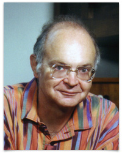
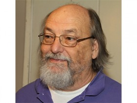

Mejores Programadores
Margaret

Como Directora de la división de Ingenieria de Software en el Laboratorio Charles Stark Draper,
lideró al equipo que diseñó y desarrolló el software de abordo de control de vuelo de las misiones del Apollo y Skylab.
Basándose en su trabajo para el Apollo, posteriormente desarrolló el "Universal Systems Language"
Ha sido pionera en los conceptos de software asíncrono, planificación por prioridades, y el diseño de software ultra-fiable.
Acuñó el término “ingeniería de software”. ha sido galardonada cob el premio Augusta Ada Lovelace en 1986 y el "NASA’s Exceptional Space Act Award" en 2003.
Donald Knuth
Escribió el libro definitivo sobre la teoría de la programción. Creó el sistema de tipografía digital TeX.
Ha sido el primer ganador del premio ACM’s Grace Murray Hopper en 1971. También fue premiado con el premio ACM’s A. M.
Turing Award en 1974, el National Medal of Science en 1979 y la IEEE’s John von Neumann Medal en 1995.
Ha sido nombrado Fellow at the Computer History Museum en 1998.
Ken Thompson
Co-creador, junto con Dennis Ritchie, de Unix. Creador del lenguaje de programación B, del esquema de cifrado de characteres UTF-8,
del editor de textos ed, y co-desarrollador del lenguaje de programación Go.
Co-ganador (con Ritchie) del premio A.M. Turing en 1983, del premio IEEE Computer Pioneer en 1994, y de la National Medal of Technology en 1998.
Ingresado como fellow of the Computer History Museum desde 1997.